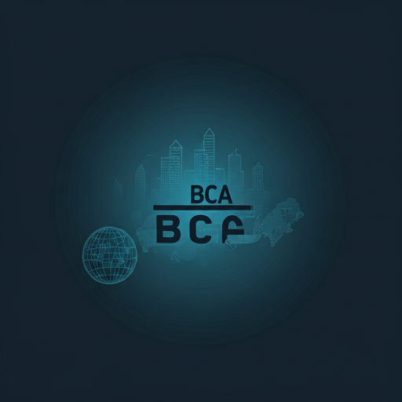
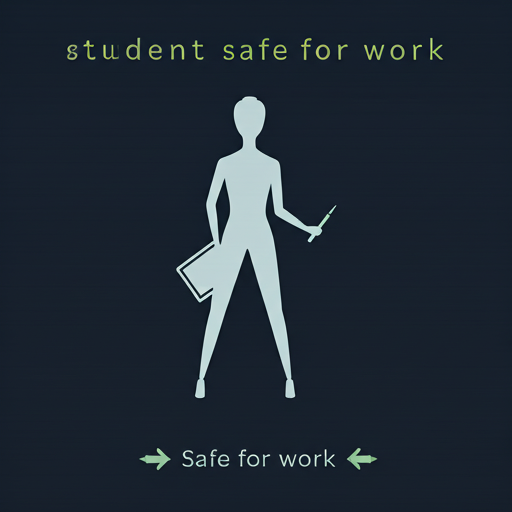

BCA Career in Nepal: The Ultimate Guide 2026.
From navigating university affiliations to landing six-figure tech roles. Your comprehensive roadmap to becoming a tech leader in Nepal's evolving digital landscape.

What is BCA? The Digital Catalyst.
Bachelor of Computer Applications (BCA) is a four-year undergraduate degree that bridges the gap between core computer science and business applications. Unlike traditional CS degrees, BCA focuses on the practical implementation of technologies in the corporate world.
Eligibility Criteria
Minimum 45% or 2.0 GPA in +2 (any stream) with a foucs on English and Mathematics basics.
Course Duration
8 semesters (4 Years) including a mandatory final year project and internship.
Software Dev
Building scalable apps for the global market.
Data Management
Analyzing trends for Nepalese enterprises.
Cyber Security
Securing digital assets of local banks.
UI/UX Design
Crafting intuitive user journeys.
The BCA Career Scope in Nepal
The IT sector is one of the highest-payout industries in Kathmandu and beyond. Here is what you can expect.
| Role | Entry-Level (Monthly) | Senior (5+ Years) | Demand Level |
|---|---|---|---|
|
Full Stack Developer MERN / Django / Laravel |
NPR 45, 000+ | NPR 180, 000+ |
CRITICAL |
|
UI/UX Designer Figma / Adobe XD / Research |
NPR 35, 000+ | NPR 150, 000+ |
HIGH |
|
QA Engineer Automation / Selenium |
NPR 30, 000+ | NPR 120, 000+ |
MODERATE |
BCA vs CSIT vs BIT
Which path is right for your technical ambition?
BCA
Focuses on software application, management, and business logic. Ideal for those wanting to enter the corporate IT workforce quickly.
BEST FOR ENTREPRENEURS
B.Sc. CSIT
Deeply theoretical and scientific. Covers hardware, mathematics, and complex algorithms. Best for researchers and core engineers.
BEST FOR R&D
POPULAR
BIT
A blend of CSIT and BCA, usually found in foreign-affiliated colleges. Highly specialized in networking and cloud infrastructure.
BEST FOR Networking
Leading University Affiliations in Nepal
TU
Tribhuvan University
PU
Pokhara University
KU
Kathmandu University
Purb
Purbanchal University
The BCA Joureny to Excellence
Year 1-2: Foundations
Mastering C, C++, Data Structures, and Database Management Systems. Building a strong logical base.
Year 2: Specializations
Diving into Web Tech, Java, and Mobile App Development. This is where your portfolio starts taking shape.
Year 4: Launchpad
Mandatory internships and capstone projects. Transitioning from student to professional developer.

Frequentyly Asked Questions
Ready to Start Your Tech Joureny?
Join thousands of students who have launched their careers through BCA Nepal. Get free counseling today.